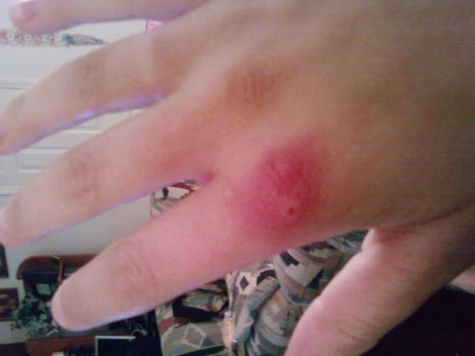

Picaduras y mordeduras
Que hacer en caso de picaduras de alacrán o escorpión
La gravedad del piquete de alacrán depende de varios factores:
- Variedad del alacrán
- Edad de la víctima, en niños suele ser más grave que en adultos.
- Cantidad de veneno inyectada por el alacrán.

1 Al igual que con otros animales posoñozos, primero retira el aguijón si está presente raspando con una navaja o algún otro objeto de borde recto. No utilice pinzas, ya que éstas pueden apretar el saco del veneno y aumentar la cantidad de veneno secretado.
2 Lava muy bien el área afectada con agua y jabón. Aplica hielo (envuelto en un trozo de tela) en el sitio de la picadura por 10 minutos, retírelo por 10 minutos y repite el proceso.
3 Atienda el shock si se presenta, y traslade la víctima rápidamente a un centro asistencial.